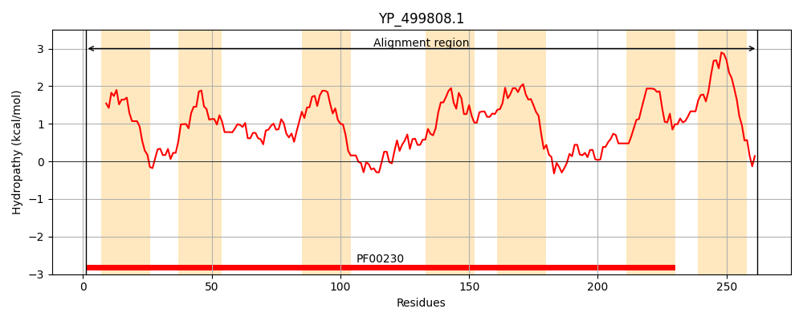
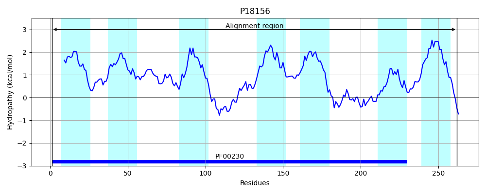
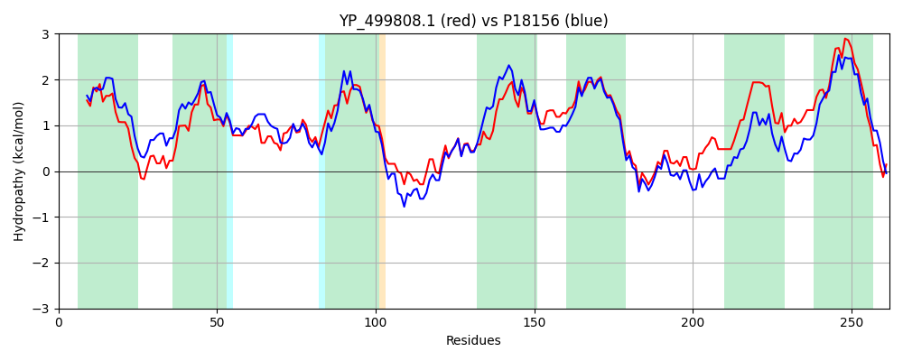

Hit Accession: P18156
Hit TCID: 1.A.8.2.1
Hit Description: gnl|BL_ORD_ID|9270 gnl|TC-DB|P18156|1.A.8.2.1 GLYCEROL UPTAKE FACILITATOR PROTEIN - Bacillus subtilis.
Mach Len: 262
e:0.000000
Query TMS Count : 7
Hit TMS Count: 7
TMS-Overlap Score: 6.800000
Predicted Substrates:CHEBI:5448;glycerol
BLAST Alignment:
Score: 817 , Bit scores: 319 bits, E-value: 2.5e-110, Alignment length: 262, Percentage identity: 59
Query: 1 MNVYLAEFLGTAILILFGGGVCANVNLKRSAANGADWIVITAGWGLAVTMGVFAVGQFSGAHLNPAVSLALALDGSFDWSLVPGYIVAQMLGAIVGATIVWLMYLPHWKATEEAGAKLGVFSTAPAIKNYFANFLSEIIGTMALTLGILFIGVNKIADGLNPLIVGALIVAIGLSLGGATGYAINPARDLGPRIAHAILPIAGKGGSNWSYAIVPILGPIAGGLLGAVVYAVFYKHTFNIGCAIAIVVVIITLILGYILNKS 262
M + E +GT +LI+FG GVCA VNLK+S + + WIV+ GWGL V M +AVG SGAHLNPA+++ALA G F W VP YI AQM+GAI+GA I++L YLPHWK+T++ AKLGVFST P+I + FAN LSE+IGT L LGIL IG N+ +GLNPLIVG LIVAIG+SLGG TGYAINPARDLGPRIAHA LPI GKG SNW YA VP++GPI GG G V Y +K I V++++ L+ Y+ KS
Sbjct: 1 MTAFWGEVIGTMLLIIFGAGVCAGVNLKKSLSFQSGWIVVVFGWGLGVAMAAYAVGGISGAHLNPALTIALAFVGDFPWKEVPVYIAAQMIGAIIGAVIIYLHYLPHWKSTDDPAAKLGVFSTGPSIPHTFANVLSEVIGTFVLVLGILAIGANQFTEGLNPLIVGFLIVAIGISLGGTTGYAINPARDLGPRIAHAFLPIPGKGSSNWKYAWVPVVGPILGGSFGGVFYNAAFKGHITSSFWIVSVILVVVLLGLYVYTKS 262 | Protein Hydropathy Plots: |
|---|
|  |  |
Pairwise Alignment-Hydropathy Plot:
|
|---|
|  |